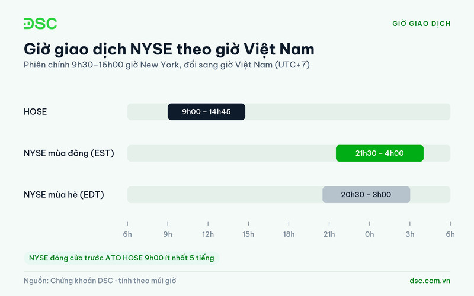

Sàn chứng khoán NYSE là gì? NYSE (New York Stock Exchange) là Sở giao dịch chứng khoán New York, thành lập năm 1792, trụ sở tại số 11 Wall Street. Từ ngày 1/11/2026 đến 14/3/2027, phiên chính của NYSE kéo dài từ 21h30 đến 4h00 sáng hôm sau theo giờ Việt Nam.
Trong bài viết này, Chứng khoán DSC tóm tắt những điểm chính bạn cần nắm.
Nếu bạn hay xem kết quả chứng khoán Mỹ trước giờ HOSE mở cửa, đọc tiếp để hiểu những con số đó đến từ đâu và nên dùng chúng thế nào.
Sàn chứng khoán NYSE là một trong những sàn giao dịch chứng khoán (stock exchange) lâu đời nhất của Mỹ, đặt tại khu Lower Manhattan, thành phố New York. NYSE ra đời từ Thỏa thuận Buttonwood (Buttonwood Agreement) do 24 nhà môi giới ký năm 1792.
Stock exchange là nơi doanh nghiệp niêm yết chứng khoán và nhà đầu tư mua bán qua công ty môi giới. NYSE giao dịch cổ phiếu, trái phiếu và chứng chỉ quỹ ETF.
Doanh nghiệp muốn niêm yết trên NYSE phải đáp ứng các tiêu chuẩn về tài chính, mức độ phân phối cổ phiếu ra công chúng và quản trị doanh nghiệp. Mức cụ thể của từng tiêu chuẩn do NYSE quy định trong bộ quy tắc niêm yết.
NYSE Composite là chỉ số tổng quát chính do NYSE công bố. Dow Jones và S&P 500 do S&P Dow Jones Indices tính, gồm cả cổ phiếu niêm yết trên NYSE lẫn Nasdaq.
| Chỉ số | Bên công bố | Thành phần |
|---|---|---|
| NYSE Composite | NYSE | Toàn bộ cổ phiếu phổ thông niêm yết trên NYSE |
| Chỉ số Dow Jones (DJIA) | S&P Dow Jones Indices | 30 cổ phiếu vốn hóa lớn của Mỹ, trên cả NYSE và Nasdaq |
| Chỉ số S&P 500 | S&P Dow Jones Indices | 500 công ty lớn của Mỹ, trên cả NYSE và Nasdaq |
Chỉ số tổng hợp NYSE (NYSE Composite) đo biến động giá của toàn bộ cổ phiếu phổ thông niêm yết trên NYSE, gồm cả cổ phiếu doanh nghiệp nước ngoài. Chỉ số này phản ánh riêng sàn NYSE. Muốn biết riêng sàn NYSE tăng hay giảm trong phiên, bạn xem NYSE Composite.
Với nhà đầu tư Việt Nam, kết quả phiên NYSE có trước khi HOSE mở cửa. Phiên Mỹ đóng lúc 4h00 sáng giờ Việt Nam (3h00 vào mùa hè Mỹ), còn HOSE mở bằng phiên ATO 9h00. Chênh lệch là 5 tiếng, hoặc 6 tiếng vào mùa hè Mỹ.
Khoảng thời gian đó giúp nhà đầu tư đọc diễn biến sàn chứng khoán Mỹ trước khi đặt lệnh sáng. Giá cổ phiếu Việt Nam vẫn do cung cầu trong nước quyết định, phiên Mỹ chỉ là một thông tin tham khảo.
Ở cấp toàn cầu, NYSE là kênh huy động vốn của nhiều tập đoàn lớn và là một cấu phần của hệ thống tài chính quốc tế. Doanh nghiệp nước ngoài cũng niêm yết tại đây để tiếp cận nhà đầu tư Mỹ.
NYSE vận hành theo cơ chế đấu giá tập trung. Lệnh mua và bán đi vào một sổ lệnh chung, rồi khớp theo nguyên tắc ưu tiên giá, sau đó đến thời gian. Phần lớn lệnh khớp điện tử, nhưng sàn giao dịch tại 11 Wall Street vẫn hoạt động với nhà tạo lập thị trường được chỉ định (DMM).
Phiên chính của NYSE diễn ra từ 9h30 đến 16h00 giờ New York, thứ Hai đến thứ Sáu. Mỹ đổi giờ theo mùa, nên giờ Việt Nam tương ứng lệch 1 tiếng giữa hai mùa.
| Mùa | Múi giờ New York | Phiên NYSE theo giờ Việt Nam | So với phiên HOSE |
|---|---|---|---|
| Mùa đông (1/11/2026 – 14/3/2027) | EST, UTC-5 | 21h30 – 4h00 sáng hôm sau | Đóng trước ATO HOSE (9h00) 5 tiếng |
| Mùa hè (từ 14/3/2027) | EDT, UTC-4 | 20h30 – 3h00 sáng hôm sau | Đóng trước ATO HOSE (9h00) 6 tiếng |

Các sàn châu Âu và châu Á lệch giờ ít hơn, nên giờ giao dịch chứng khoán quốc tế của chúng gần với phiên giao dịch HOSE hơn NYSE.
Nhà đầu tư không gửi lệnh trực tiếp vào NYSE. Mọi lệnh đi qua một công ty môi giới là thành viên hoặc có quyền truy cập sàn. Tài khoản chứng khoán mở tại công ty chứng khoán Việt Nam chỉ giao dịch HOSE, HNX và UPCoM. Muốn mua cổ phiếu niêm yết trên NYSE, bạn cần mở tài khoản chứng khoán Mỹ tại một công ty môi giới nước ngoài.
Cách này kèm ba rủi ro cần kiểm tra trước.
NYSE và Nasdaq là hai sàn chứng khoán Mỹ lớn nhất, cùng đặt tại New York. Hai sàn khác nhau chủ yếu ở mô hình giao dịch và nhóm doanh nghiệp niêm yết.
| Tiêu chí | NYSE | Nasdaq |
|---|---|---|
| Năm thành lập | 1792 | 1971 |
| Mô hình giao dịch | Đấu giá tập trung, có sàn giao dịch vật lý | Hoàn toàn điện tử, nhiều nhà tạo lập thị trường |
| Nhóm doanh nghiệp tiêu biểu | Ngân hàng, công nghiệp, hàng tiêu dùng lâu năm | Công nghệ, công ty tăng trưởng |
| Chỉ số chính của sàn | NYSE Composite | Chỉ số Nasdaq Composite |
Kết quả phiên NYSE có lúc 4h00 sáng (mùa đông Mỹ), nhưng lệnh của bạn với cổ phiếu Việt Nam đặt từ 9h00 trên HOSE. Chứng khoán DSC không cung cấp dịch vụ giao dịch cổ phiếu NYSE; tài khoản DSC dùng cho HOSE, HNX và UPCoM.
Sau khi đọc phiên Mỹ, bạn có thể trao đổi với chuyên gia Môi giới 1:1 của DSC trước giờ mở cửa. Nhà đầu tư mới thường bắt đầu với cách chơi chứng khoán ở thị trường trong nước, nơi thủ tục và ngôn ngữ quen thuộc hơn.
| Việc cần làm | Thị trường Mỹ (NYSE) | Thị trường Việt Nam qua DSC |
|---|---|---|
| Mở tài khoản | Công ty môi giới nước ngoài | eKYC trên App DSC Trading trong 3 phút |
| Phí giao dịch | Theo biểu phí của công ty môi giới đó | Từ 0,1% giá trị lệnh |
| Tiền bán cổ phiếu | Thanh toán T+1 | T+2, có ứng trước tiền bán trên App |
| Hỗ trợ bằng tiếng Việt | Tùy công ty môi giới | Môi giới 1:1 |
Phiên thứ Sáu của Mỹ kết thúc vào sáng thứ Bảy giờ Việt Nam, và NYSE nghỉ theo lịch lễ Mỹ như Lễ Tạ ơn 26/11/2026.
Khác biệt chính là mô hình giao dịch: NYSE có sàn vật lý ở Wall Street, Nasdaq giao dịch hoàn toàn điện tử và có nhiều công ty công nghệ hơn.
Doanh nghiệp cần đạt các tiêu chuẩn về tài chính, mức độ phân phối cổ phiếu ra công chúng và quản trị doanh nghiệp. Ngưỡng cụ thể về vốn hóa, lợi nhuận và số cổ đông do NYSE quy định trong bộ quy tắc niêm yết.
Không mua trực tiếp được. Nhà đầu tư cần tài khoản tại công ty môi giới nước ngoài có quyền giao dịch trên NYSE. Tài khoản trong nước chỉ giao dịch HOSE, HNX và UPCoM.
NYSE không giữ tiền của nhà đầu tư. Tiền nằm trong tài khoản tại công ty môi giới, nên bạn rút theo quy trình của chính công ty đó, thường về tài khoản ngân hàng đứng tên mình.
NYSE là một trong những sàn niêm yết lâu đời nhất của Mỹ. Với nhà đầu tư Việt Nam, giá trị thực tế nằm ở kết quả phiên đêm có trước giờ HOSE mở cửa. Ba việc nên làm sau bài này:
Khi đã sẵn sàng, mở tài khoản chứng khoán DSC qua eKYC 3 phút, theo đúng các bước trong cách mở tài khoản chứng khoán.